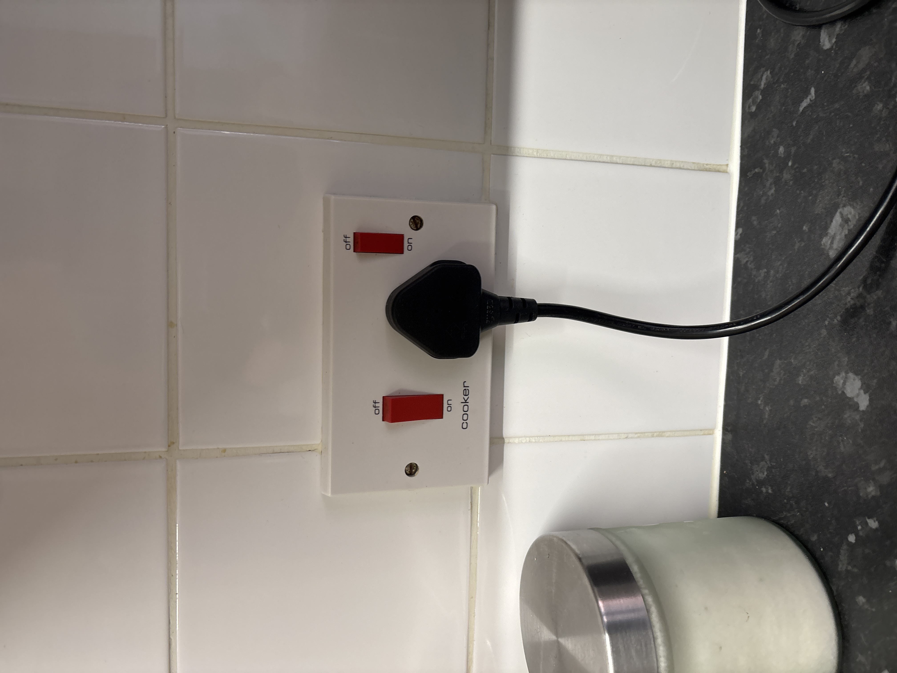

UK, September 2026
A diary — Hong Kong → Telford → Birkenhead → Edinburgh → London → home
Friday 4 – Saturday 5 September — China Eastern
The food on the plane was terrific. The transfer in Shanghai was smooth. China Eastern is an amazing airline.
Saturday 5 September — On the way to Telford
We landed at Gatwick after that good overnight, and almost immediately got on the wrong train — Thameslink heading toward Bedford instead of Victoria. It was all good. We got off at St Pancras International and walked to Euston. People here walk really fast. One of the suitcase wheels is already a bit broken. Oh well.
The walk is only a few minutes and not pretty: Euston Road, buses, everyone towing cases. Then the 9:10 Avanti to Birmingham New Street, due in at 10:34, and onward to Telford Central.
We made it to the Airbnb. On the tiled kitchen wall: a white plate, two red switches, a plug already in. One switch is labelled cooker. Not the boiler. The cooker.

Lunch at Wildwood in Southwater. The tuna avocado pâté had a nice little blue cheese surprise. The lasagna kinda tasted like borscht. The hard cheese was yum — Sasha’s verdict.
Saturday evening — supermarkets, a long walk, a hotpot jacket
We fought the jet lag by staying out and walked the entire Telford Central area, in and out of Iceland (frozen pre-prepped food is shockingly cheap here), Aldi, Poundland, then further up to Sainsbury's, where most of the real shopping happened, plus a round at M&S. Fruit, frozen food, salmon, steak — so much cheaper than home. Genuinely excited to cook this trip.
Hickory's Smokehouse was far from the Airbnb and we walked anyway. Maybe a mistake — we ended up crossing roundabouts on foot, which felt a bit dangerous — but it was relaxing all the same, and it got colder as the night came in. We made it safe.
Inside: warm, cabin vibes. We ordered the two-person platter, which was way too much food, and they brought popcorn as a starter — gone in minutes. The brisket was so tender it was Sasha's favourite by far. Mark's favourite was the honey-glazed chicken wings, which tasted like the wings from Loblaws back in Toronto. Uber home — late, cold, sleepy.
Back at the Airbnb we ran the washing machine empty before trusting it with a real load, then fought the portable dryer, whose cord was too short to reach anywhere useful. The fix: Mark's belt looped through the door hook as an extra hanging point, so Sasha's jacket — which smelled like hotpot — could finally dry. Tidied up, chilled, bed.
London base — decided from Telford
We cancelled the Darwin Street Airbnb and took Chelsea Cloisters on Sloane Avenue. Check-in at three. If we arrive early: bags down, walk to Harrods.